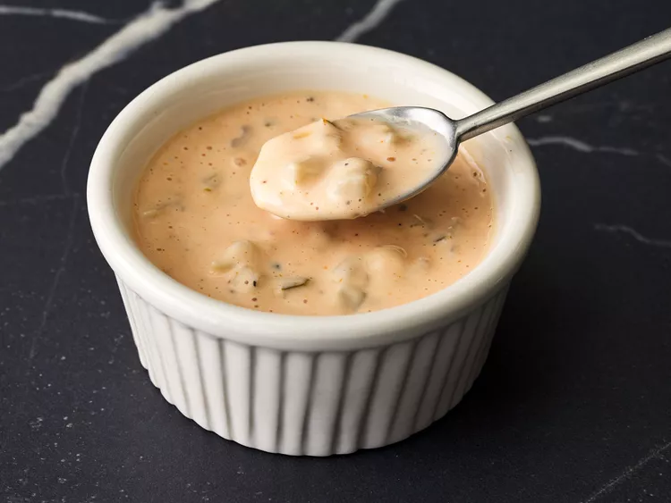

Don't you just love the special sauce for burgers you can get from restaurants and fast food joints? Well, we do! Put this secret sauce on your burgers instead of the regular mayo and ketchup mixture. We love to dip our French fries in it too.